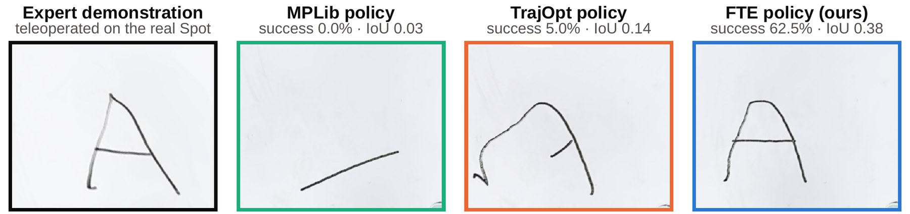
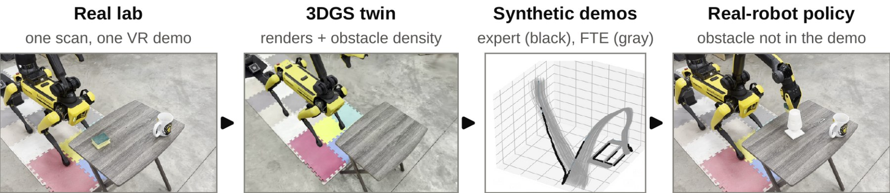
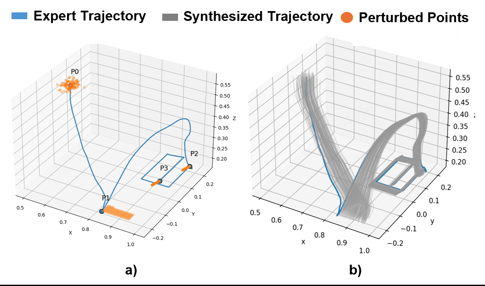
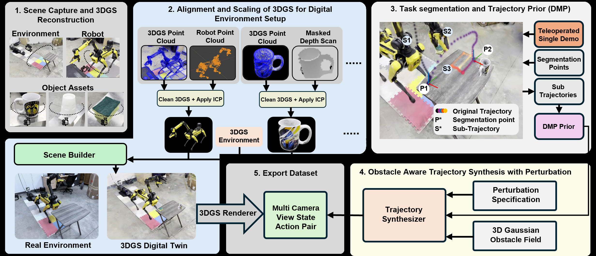
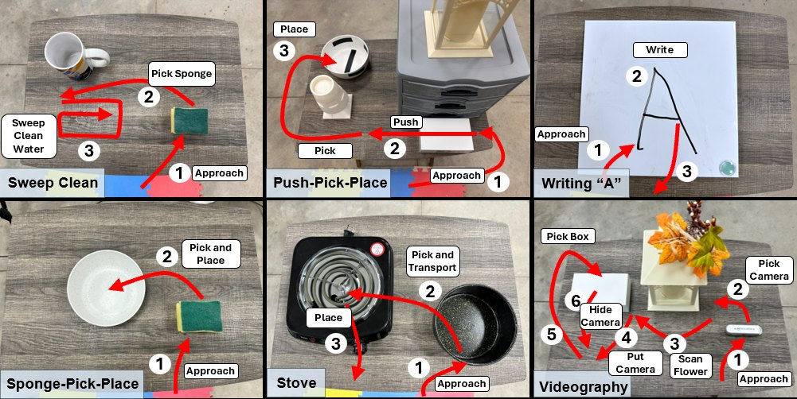
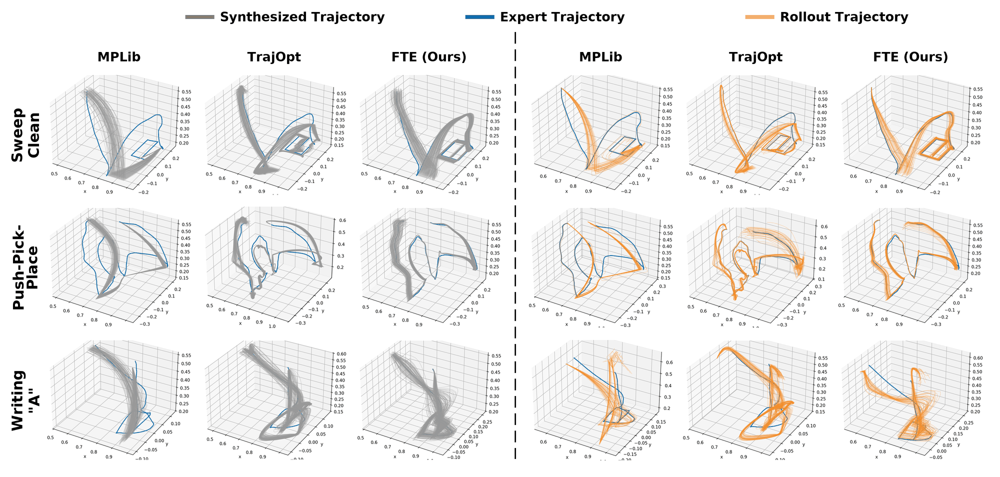
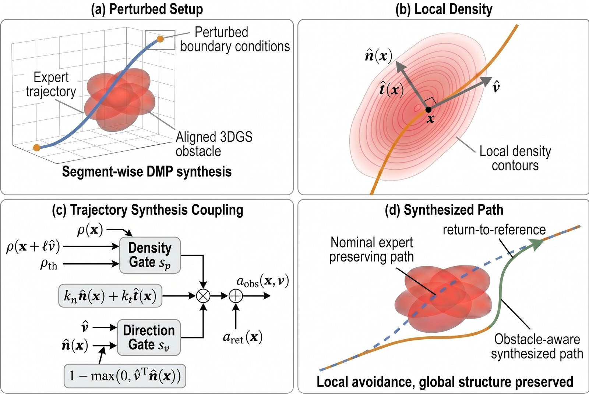
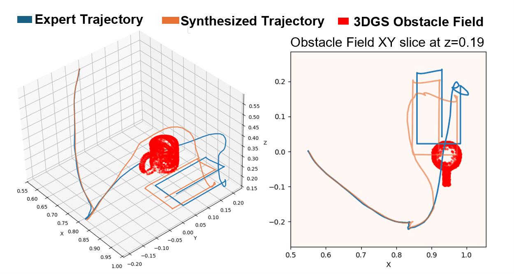

RealStep 1
Scan the lab
A handheld video of the lab becomes a 3D Gaussian splat in 5–10 minutes, registered to the robot frame by ICP (7.7 mm trimmed-mean residual). Spot and the objects are scanned separately. All six tasks share the one lab scan.
CoRL 2026 · Late-Breaking Results
Expert-preserving demonstration synthesis in a Gaussian-splat twin
University of New Hampshire
Abstract
A 3D Gaussian Splatting (3DGS) twin can turn one real demonstration into hundreds of rendered ones and train a policy that runs on the real robot. We find that for skills defined by their path, this Real2Sim2Real loop works best when the synthesized motion stays the expert's. Follow-the-Expert (FTE) replays each phase of one VR demonstration as a dynamic movement primitive, moves only the phase boundaries and their object splats, and lets the splat's density steer the gripper around obstacles. On a real Boston Dynamics Spot, FTE policies succeed in 75.6% of rollouts on four shape-sensitive tasks, against 40.0% for trajectory optimization and 3.8% for keyframe motion planning; all three tie at 91.3% where only the end state matters. FTE also leads with obstacles absent from the demonstration (86.7% vs. 60.0% on three tasks), and doubling the offset bounds needs only more rendered demonstrations.
01 · Problem
A Gaussian-splat twin can turn one real demonstration into hundreds: move the objects, retarget a few keyframes, and plan the arm motion between them. Planners optimize reaching those keyframes, and for pick-and-place that is all the task needs.
In wiping, pushing, writing and filming, the path itself matters. A wipe has to cover the spill, a push has to leave the object graspable, a pen has to draw the letter, and a camera has to follow its arc. We call such tasks shape-sensitive. For them, a path planned between keyframes differs from the demonstrated one in ways that decide whether the task succeeds.
The clip shows two sampled layouts of Writing “A”, rendered from the same single demonstration by MPLib, which plans between retargeted keyframes (as in RoboSplat), by TrajOpt, which optimizes the motion between them (as in 1001 DEMOS), and by FTE.

02 · Approach
FTE treats the demonstration as a sequence of phases and changes as little of it as the new scene requires. Drag the object in the schematic, or add an obstacle.
While teleoperating, the operator presses a button at each phase change (approach, grasp, wipe, and so on). Each phase becomes a dynamic movement primitive (DMP) whose forcing term stores the expert's motion.
Synthesis samples bounded offsets of the phase boundaries and moves the linked object splats with them. Each DMP replays the expert's forcing term toward its new boundary, keeping the approach, contact path, gripper timing and orientation.
The splat renders the robot's front and top camera views. The Gaussians of designated obstacles also form a density field; its gradient enters the DMP as a repulsive acceleration (the density term), so the gripper steps around the obstacle and returns to the expert's path.
03 · Method
Steps 1, 2 and 6 take place in the real lab; steps 3 to 5 run in the splat twin.

RealStep 1
A handheld video of the lab becomes a 3D Gaussian splat in 5–10 minutes, registered to the robot frame by ICP (7.7 mm trimmed-mean residual). Spot and the objects are scanned separately. All six tasks share the one lab scan.
RealStep 2
An operator teleoperates Spot's arm in VR and presses a button at each phase change. No other human data is used.
The one human demonstration for each task 2× speed
SimStep 3
Spot's splat is split into per-link Gaussians that follow any arm configuration through forward kinematics, and each object splat moves rigidly, so the twin renders the robot's front and top camera views for any arm pose and layout. The Gaussians of designated obstacles double as the obstacle model.
SimStep 4
Each phase boundary of the demonstration is linked to an object splat, for example the sponge, the box and its target bowl, or the whiteboard. For every synthetic demonstration we sample a bounded offset for each boundary (about 0.1 m per axis) and move the boundary and its object together, so the robot sees a new layout every time.

SimStep 5
Each sampled layout becomes one demonstration. FTE rolls out the expert's DMPs toward the moved boundaries and renders the robot's camera views frame by frame. The baselines fill in the same layouts their own way: MPLib plans the motion, TrajOpt optimizes it.
RealStep 6
The rendered front and top views, plus the one real demonstration, train a Diffusion Policy with the same architecture for every generator. The policy then runs on the real Spot. The twin simulates no dynamics: it renders views and supplies the obstacle density.

04 · Real robot
We trained one Diffusion Policy per task and generator and ran each 40 times on the real Spot. Within a task, every policy saw the same demonstration, phase boundaries, sampled layouts, cameras and architecture.

Four shape-sensitive tasks: Sweep Clean (pick up a sponge and wipe spilled water off the table), Push–Pick–Place (push a block out, then pick it up and place it in a container), Writing “A” (write the letter on a whiteboard) and Videography (pick up a camera, film a flower along an arc, put the camera down and cover it with a box).
Two endpoint-dominated controls, where only the end state matters: Sponge Pick–Place and Stove (move a pan onto the stove). They test whether FTE's gain comes from the path or from better data in general.
On the four shape-sensitive tasks, FTE succeeds in 121 of 160 real rollouts (75.6%), against 64 for TrajOpt and 6 for MPLib (task-stratified test, FTE vs. TrajOpt, p < 10−10). FTE leads on each of the four.
On the two endpoint controls, all three generators succeed in exactly 73 of 80 (91.3%). The gain appears only on the shape-sensitive tasks, which is what keeping the expert's path predicts.
The written letter is the task output. One real rollout per policy, 2× speed; the three clips start together. Bars: success over 40 rollouts.

05 · Obstacles
After the demonstration, an obstacle is added to the scene, so the expert never had to avoid it. FTE synthesizes around the obstacle's splat, and the policy then avoids the real obstacle. 500 synthetic demonstrations, 40 real rollouts each.


06 · Ablations
Each ablation changes one part of the pipeline and keeps the rest fixed. The first three are real-robot results with 40 rollouts per bar; the fourth measures the synthesized trajectories only.
07 · Range
The synthesis bounds (1×) span about 0.1 m per axis. When the objects move beyond them and the policy is not retrained, every method degrades, because FTE only retargets the demonstrated motion locally.
When the training window is widened to 2×, 256 demonstrations spread too thin: Sweep Clean falls to 65.0% and the Sponge control to 67.5%. Rendering 1,000 demonstrations brings them to 95.0% and 97.5%.
The wider window needed more rendered demonstrations and no further teleoperation.
08 · Table
| Task | No obstacles, 256 demos | Obstacles, 256 | Obstacles, 500 | Collisions ↓, 500 | |||||
|---|---|---|---|---|---|---|---|---|---|
| MPLib | TrajOpt | FTE | TrajOpt | FTE | TrajOpt | FTE | TrajOpt | FTE | |
| Shape-sensitive | |||||||||
| Sweep Clean | 12.5 | 75.0 | 92.5 | 67.5 | 80.0 | 82.5 | 95.0 | 22.5 | 7.5 |
| Push–Pick–Place | 2.5 | 30.0 | 75.0 | 30.0 | 50.0 | 35.0 | 82.5 | 60.0 | 12.5 |
| Writing “A” | 0.0 | 5.0 | 62.5 | – | – | – | – | – | – |
| Videography | 0.0 | 50.0 | 72.5 | 42.5 | 60.0 | 62.5 | 82.5 | 27.5 | 22.5 |
| Pooled | 3.8 | 40.0 | 75.6 | 46.7 | 63.3 | 60.0 | 86.7 | ||
| Endpoint-dominated controls | |||||||||
| Sponge Pick–Place | 95.0 | 92.5 | 92.5 | 82.5 | 85.0 | 92.5 | 95.0 | 2.5 | 2.5 |
| Stove | 87.5 | 90.0 | 90.0 | 77.5 | 80.0 | 95.0 | 97.5 | 5.0 | 2.5 |
| Pooled | 91.3 | 91.3 | 91.3 | 80.0 | 82.5 | 93.8 | 96.3 | ||
Table 1 Real-robot success and collision rates (%), 40 rollouts per cell, one trained policy per cell, one real plus 256 or 500 synthetic demonstrations. Obstacles were absent from the demonstration. Pooled with obstacles: the three shape-sensitive tasks that have them. –: not run. MPLib, which plans without obstacle geometry, succeeds in none of the obstacle settings (collisions 75.0–100%).
Each cell is one trained policy, run 40 times on layouts inside the synthesis bounds; within a comparison all generators face the same test layouts. Success is judged by inspection (Writing: two judges, 85–100% agreement), and a collision is any observed contact with the obstacle.
MPLib follows RoboSplat and plans without obstacle geometry; the ablations give it a 3DGS obstacle proxy. TrajOpt re-implements the trajectory optimization of 1001 DEMOS with its own collision cost.
Pooled over the four shape-sensitive tasks, FTE exceeds TrajOpt (rollout-level, task-stratified Cochran–Mantel–Haenszel p < 10−10). On the endpoint controls the three generators tie exactly when pooled (73 of 80 each). With obstacles, pooled over the three shape-sensitive tasks: p = 2.9×10−6 at 500 demonstrations, p = 0.011 at 256.
09 · Limitations